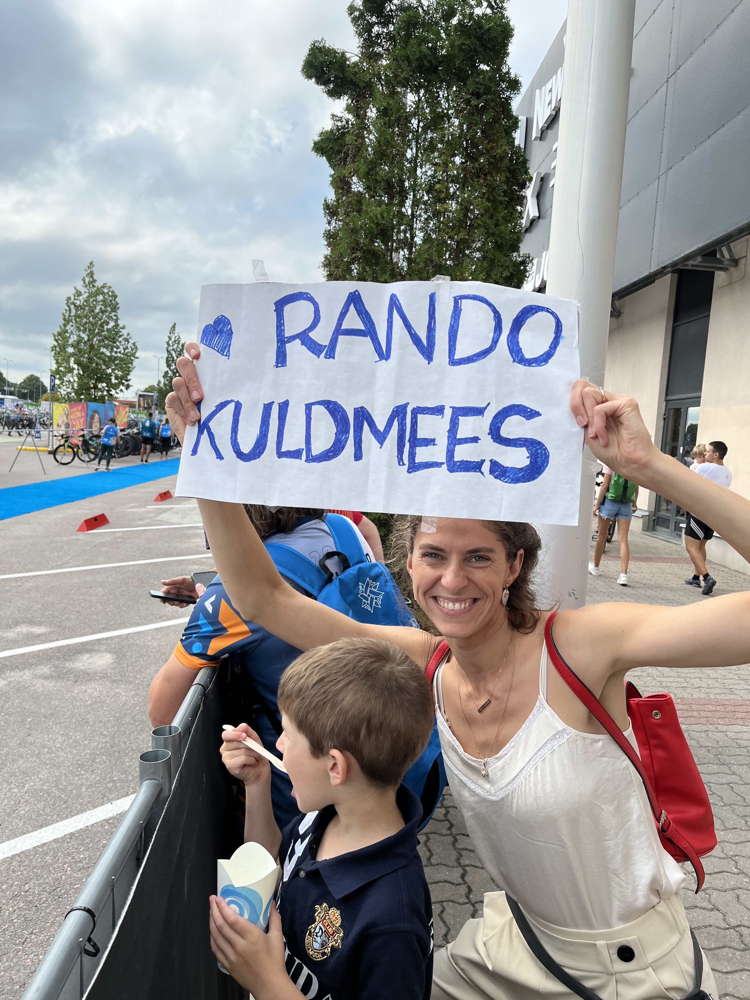
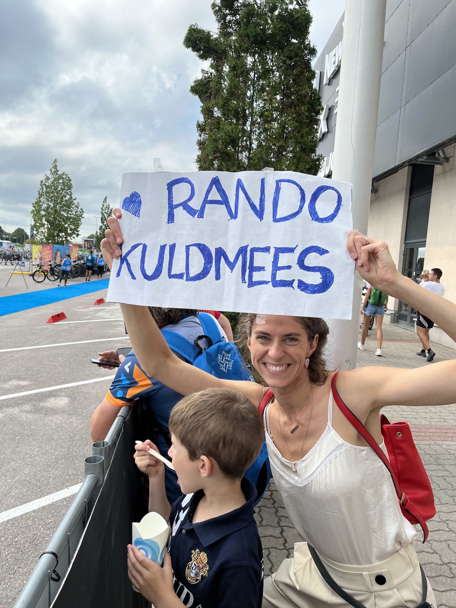
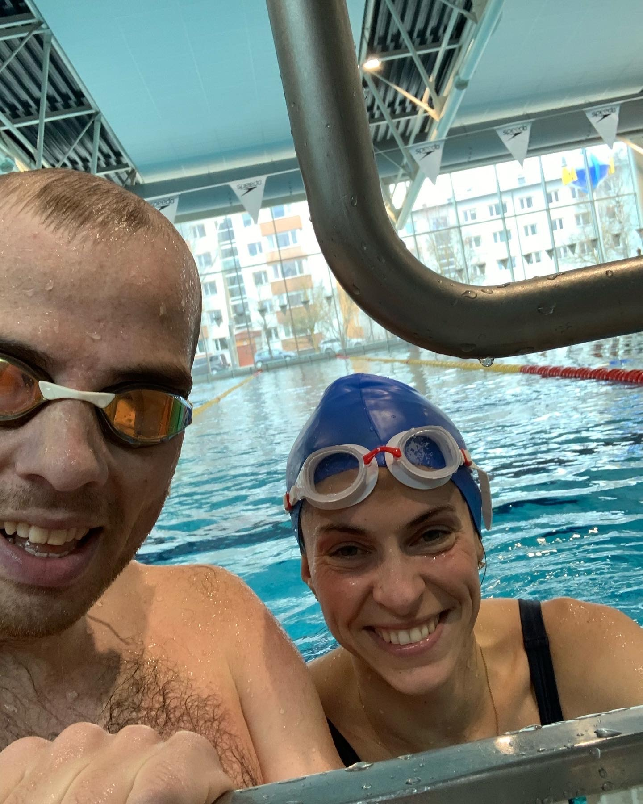
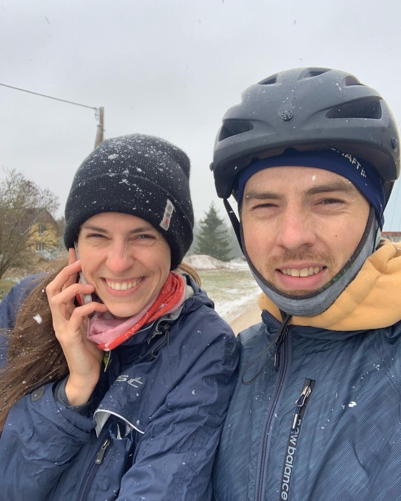
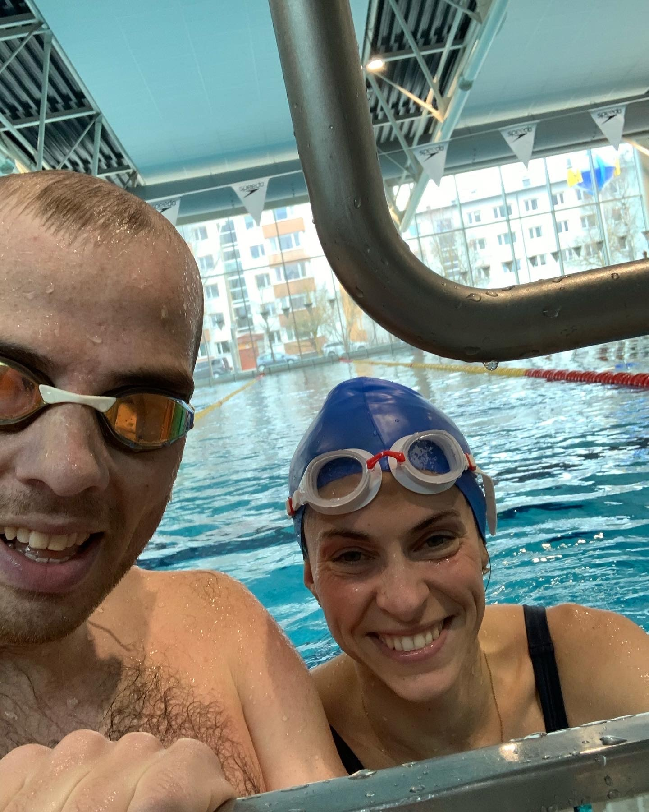
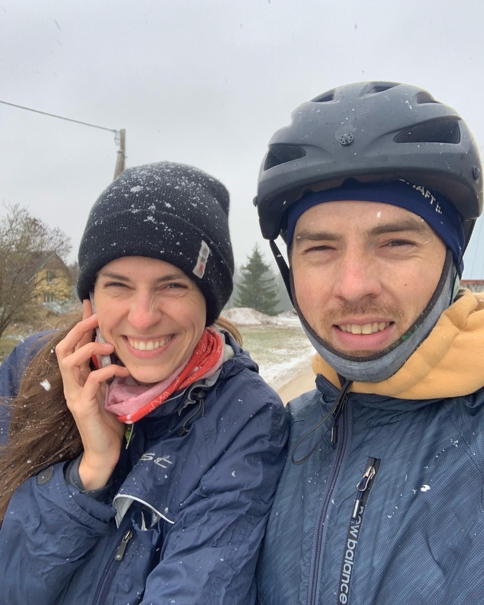

6. augustil sai üks pikem seiklus emotsionaalse lõpu - Ironman 70.3 (1.9km ujumist, 90km ratast ja 21.1km jooksu otsa). Esimesel korral kohe Euroopa ja Eesti meistrivõistlused. Sai lõpetatud igati hästi 5h28min. Enamustes arvestustes sai ilusasti keskele jäädud. Raseerimata jalgade arvestuses vähemalt top 5. Aga ega saigi tegelt ju käidud ennast ületamas. Uskuge või mitte, see värk on väga suurel määral vaimne.
Loo alguses hakkasin treenima poole lühema distantsi tarvis märtsis. Tegime seda koos parima treeningkaaslasega. Kohe esimese rattatrenniga saime tuult ja jäävihma. Hea algus hooajale, sest hullemat ilma on raske saada. Mega lahedad ujumistrennid erinevates ujulates. Treeningkavad aitasid nädala kaupa areneda ja hoida kurssi. Ilma kavata poleks olnud konkreetset plaani kuidas jõuda selleni, et nüüd oleme päriselt ka valmis võistlusteks. Siinkohal kummardus ja tänud Kevin Vabaorule, kes sillutas meile teed. Lisaks oli vahepeal abiks Erki Kukk, kes seadistas ratast ja õpetas kuidas ratta peal olla. Jooksutossudega aitas juba teist korda Jooksuekspert. Ilma õigete tossudeta oleks mu jalad ülekoormusest ettevõtmise ära lõpetanud. Võrkpalluri vigastused nooruses + puudulik füsio õigel ajal on oma jälje jätnud. Profysio lugematud massaažid. Töökaaslased, kelle trennidele sai kaasa elatud. Ja lähedaste tugi, et saaksin ikka kõik trennid tehtud. Ja Risto, kelle käest sai koguaeg küsitud kõikvõimalikke küsimusi. Ja Mari, kes aitas mind sportiarsti visiidile, et veenduda kas mu süda peab koormustele vastu.
Enne trennide algust mõtlesin, et olen ju terve elu sporti teinud ja olen sportliku eluviisiga. Tutkit. Esimeste nädalatega sai kaotatud umbes 5kg. 5kg! Sain aru, et ma olin meditsiinilises mõttes ülekaalu alumises otsas enne trennide algust. Aga nüüdseks on sangad seljataha jäetud ja pingutan, et sinna need ka jääks.
Loo keskel sai tehtud Salv triatlon, kus sai läbitud igati enesekindlalt olümpia distants. Mega mõnus elamus koos motiveerivate töökaaslastega. Enne seda võistlust sai juba arutletud ja mõeldud, et äkki peaks proovima Ironman 70.3 osalemist. Ma polnud päris kindel, et ma oma ettevalmistusega olen sealmaal. Lisaks kui sain teada, et peab maksma ~400 euri osalemise eest. Ja pole kindel kas ikka ära teen. Siis otsustasin, et veel ei hakka minema ja võib-olla teen veel suve lõpus omal käel mitme päeva peale kolme kodu triatloni - ujuda Käsmust Võsu koju, rattaga Võsu kodust Juta koju ja joosta Juta kodust meie Tartu kodu. Aga Salv triatloni järgneval esmaspäeval tegid töökaaslased mulle teadaande - nad olid mind registreerinud Ironman 70.3 võistlusele! See oli nii südant soojendav ja meeliülendav hetk. Egas siis midagi, tuli edasi minna. Ja las see kolme kodu triatlon jääb järgmiseks korraks.
Taaskord tuli appi Kevin, kes tegi 3 nädalat mulle ettevalmistust. Nädalavahetuste trennid olid kokku sama pikad kui ma enne nädala peale kokku tegin. Aga kõiki neid trenne ootasin pikisilmi. Vahel isegi kell 6 ärgates oli selline tunne, et peaks nüüd hiilima rattaga sõitma. Kahjuks kõik ikka ei kulgenud nii, nagu oleks tahtnud. Viimastel nädalatel andis ikka parema jala hüppeliiges endast tunda jooksude järel ja sai otsustatud, et lõpus enam jooksutrenne ei tee. Oleks päris täbar roomata jooksu distantsi.
Organisatoorse poole pealt aitas mind Risto. Kõik need reeglid. Asjad, mida võistluseks tarvis (ala numbrihoidja). Kuhu ja millal tuleks ratas viia. Kus peab registreerima. Kuidas vahetusalas käituda. Kuhu ma oma joogipudelid mahutan. Kas ma saan ikka rajal piisavalt vahetada joogipudeleid. Kas kummikommid või geelid. Viimased päevad olidki pigem ettevalmistus, et rajal sujuksid asjad tõrgeteta.
Võistluse hommikul ärkasin ülesse 96se pulsiga. Tavaliselt mu rahuloleku pulss hommikul on 60. Keha vist oli juba stardi saanud. Võistlustel tundsin ennast väga enesekindlalt ja jaksu oli korralikult. Trennikava oli mind korralikult ettevalmistanud. Ujumine vajab ikka tavaliselt 10-15minutit, et saaks mootori käima. Rattal oli ka mõnus sõtkuda, kuigi tuul tegi asjad lõbusaks. 70. kilomeetril mõtlesin, et huvitav kas need jalad jaksavad veel joosta ka. fun fact - triatloni ajal võiks tarbida umbes 60g süsivesikuid tunnis. Ma panin rattal nahka umbes 1.5 pakki tutti frutti kummikaid + mõned geelid. Joosta ka jaksasin, jalg oli mega kerge. Aga viimased kilomeetrid olid ikka väljakutsuvad. Jalad justkui jaksasid, aga vaim mõtles, et äkki peaks joogipausid pikemaks tegema. Õnneks olid töökaaslased ja pere ja sõbrad raja ääres (aitäh Madisele, kes mälestuseks jäädvustused tegi), kelleni oli hea motivatsioon joosta. Muidugi õnnistas ilm jooksu ajal päikesega, mis tähendas kuumust. Mis omakorda megalt palju higi. Joogipunktides sai mütsi alla jääd pandud, mis pakkus natuke jahutust.
Loo lõpus finisheerisin Ironman 70.3. Keha oli rahul, vaim oli kusagil kosmoses. Mega tunne! Tänud töökaaslastele, kes mind utsitasid ja üle piiri lükkasid. Järgmine kord uuesti!
Lisaks Madise piltidele sai õnneks jäädvustatud Arnold Schwarzenegger'i kõne, kus ta katab mu loo lühidalt.

 

 


